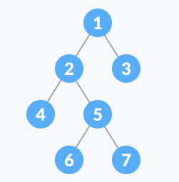

C++ and Algorithms for Interview
Small points
x++increments the value of variablexafter processing the current statement.x+=i++;additoxthen increaseiby 1.++xincrements the value ofxbefore processing the current statement.x+=++i;increaseiand addi+1tox.- Array is passed by reference.
array = &array[0]. - Reference must be initialized using a variable of the same type.
- Enumerate example:
enum Suit_t {A, B, C, D}; const string Name[] = {"A", "B", "C", "D"}; enum Suit_t x = C; std::cout << Name[x] << std::endl;
Function pointer
For functions that have precisely the same type signature, a function pointer allow us to call them the same way from a syntactic point of view.
Example:int min(int a, int b);
// EFFECTS: returns the smaller of a and b.
int max(int a, int b);
// EFFECTS: returns the larger of a and b.
int (*foo)(int, int);
// Then we can let foo = min or max and call
foo(5, 3); //for example
Memory
- Memory leak is caused when not recycling an allocated dynamic object.
- Check memory leak:
valgrind --leak-check=full ./program <args> - The space for objects created via
newcomes from heap. - Stack is for function calls.

Struct and class
-
The default copy constructor is shallow copy, which works when there is not points in the member of that data type.
-
The sizeof for a struct is not always equal to the sum of sizeof of each individual member. This is because of the padding added by the compiler to avoid alignment issues. Padding is only added when a structure member is followed by a member with a larger size or at the end of the structure.
- Different compilers might have different alignment constraints as C standards state that alignment of structure totally depends on the implementation.
-
Example: (output: "Size of struct 24")
int main(){ struct A { // sizeof(int) = 4 int x; // Padding of 4 bytes // sizeof(double) = 8 double z; // sizeof(short int) = 2 short int y; // Padding of 6 bytes }; printf("Size of struct: %ld", sizeof(struct A)); return 0; }
- The size of the class is similar to the struct with little difference.
- Empty class has size 1 (byte).
- The virtual function pointer has size of 4 bytes.
- The size of sub-class is equals to the size of all members plus the size of its parent class. (Note that they share the virtual function pointers)
- Notice on subclass method:
PosIntSet s; // sub class instance of class Intset IntSet *p = s; // this points precisely to s IntSet &r = s; // r is declared to be “reference to an IntSet // Apparent type: the declared type of the reference. (IntSet) // Actual type: the real type of the referent. (PosIntSet) // Actual type: the real type of the referent. (PosIntSet)
- Virtual function and virtual table

- Note that the constructor function cannot be a virtual function since when instantiating an object, it allocates no memory for that and then there would be no virtual table.
Standard Template Library (STL)
The Standard Template Library (STL) is a set of C++ template classes to provide common programming data structures and functions such as lists, stacks, arrays, etc. It is a library of container classes, algorithms, and iterators.
- Containers or container classes store objects and data.
- Sequence Containers: implement data structures which can be accessed in a sequential manner. (vector, list, deque, etc)
- Container Adaptors : provide a different interface for sequential containers. (queue, stack, etc)
- Associative Containers : implement sorted data structures that can be quickly searched (O(log n) complexity). (set, map, multiset, etc)
- Unordered Associative Containers : implement unordered data structures that can be quickly searched. (unordered_set, unordered_multiset, unordered_map, all introduced in C++11)
-
Algorithms are a collections of implemented functions that operate on containers. For example, there are sorting and searching functions like
sort()andbinary_search(). -
Iterators are used to point at the memory addresses of STL sequence containers.
vector<int> ar = { 1, 2, 3, 4, 5 }; vector<int>::iterator ptr = ar.begin(); -
Functors are objects that can be treated as though they are a function or function
pointer.
// A Functor class increment { private: int num; public: increment(int n) : num(n) { } // This operator overloading enables calling // operator function () on objects of increment int operator () (int arr_num) const { return num + arr_num; } }; The line, transform(arr, arr+n, arr, increment(to_add)); is the same as writing below two lines, // Creating object of increment increment obj(to_add); // Calling () on object transform(arr, arr+n, arr, obj);C++ 11 new features
-
Automatic Type Deduction:
"auto" allow the complier to deduce the actual type of a variable, making
the coding more simple. For example:
std::map<std::string, std::vector<int>> map; for(auto it = begin(map); it != end(map); ++it) { } -
nullptrreplaces theNULL. -
Range-based for loop: more simple loop
std::vector<int> v = {0, 1, 2, 3, 4, 5}; for (const int& i : v) // access by const reference for (auto i : v) // access by value, the type of i is int -
Smart pointers:
- unique_ptr: should be used when ownership of a memory resource does not have to be shared (it doesn't have a copy constructor), but it can be transferred to another unique_ptr (move constructor exists).
- shared_ptr: should be used when ownership of a memory resource should be shared (hence the name).
- weak_ptr: holds a reference to an object managed by a shared_ptr, but does not contribute to the reference count; it is used to break dependency cycles (think of a tree where the parent holds an owning reference (shared_ptr) to its children, but the children also must hold a reference to the parent; if this second reference was also an owning one, a cycle would be created and no object would ever be released).
-
Lambdas: C++11 introduces lambdas allow users to write an inline, anonymous functor.
For example:
void func(std::vector<double>& v) { std::transform(v.begin(), v.end(), v.begin(), [](double d) { return d < 0.00001 ? 0 : d; } ); } void func(std::vector<double>& v) { std::transform(v.begin(), v.end(), v.begin(), [](double d) -> double { if (d < 0.0001) { return 0; } else { return d; } }); } std::function<int(int)> lfib = [&lfib](int n) {return n < 2 ? 1 : lfib(n-1) + lfib(n-2);}; -
R-value reference: C++11 adds a new type of reference called an r-value reference. An
r-value reference is a reference that is designed to be initialized with an r-value
(only).
std::string s1 = "Hello "; std::string s2 = "world"; std::string&& s_rref = s1 + s2; // the result of s1 + s2 is an rvalue s_rref += ", my friend"; // I can change the temporary string! std::cout << s_rref << '\n'; // prints "Hello world, my friend" -
Thread: the class
std::threadrepresents a single thread of execution. Threads allow multiple functions to execute concurrently.
Reference for C++ part
- Problem Solving with C++ (8th Edition), by Walter Savitch, Addison Wesley Publishing (2011)
- https://www.geeksforgeeks.org/
- https://www.codeproject.com/Articles/570638/Ten-Cplusplus11-Features-Every-Cplusplus-Developer
- https://en.cppreference.com/w/
Data structures
Data structure is a storage that is used to store and organize data. It is a way of arranging data on a computer so that it can be accessed and updated efficiently.
I will not discuss about basic data structures including array, queue, linked list, and stack. One can easily utilize the data structure through C++ STL. Two images below offer a clear view of those data structures and features.


We will take a closer look into some data structures, hash table, and binary tree, and their extensions.
Hash table
The hash table stores elements in key-value pair. Key is the unique integer that is used for indexing the values. Value is the data that are associated with the corresponding key.
Hash function
In a hash table, a new index is processed using the keys. And, the element corresponding to that key is stored in the index. This process is called hashing.
A good hash function may not prevent the collisions completely however it can reduce the number of collisions. For example:
- Hashing by modulo:
h(k) = k % m;for k is a key and m is the size. - Hashing by multiplication:
A = (sqrt(5) - 1)/2; // we define that kA % 1 gives the fractional part kA. h(k) = floor(m * ((k * A) % 1));
Hash Collision
Collision occurs when the hash function maps two or more items (keys) with different search keys into the same bucket or index. There are two major schemes for solving the collision: separate chaining and open addressing. In chaining, if a hash function produces the same index for multiple elements, these elements are stored in the same index by using a doubly-linked list. Unlike chaining, open addressing doesn't store multiple elements into the same slot. Here, each slot is either filled with a single key or left. For example, In linear probing, collision is resolved by checking the next slot.
Trees
A tree is a nonlinear hierarchical data structure that consists of nodes connected by edges. Some definitions are listed here:
- Root: It is the topmost node of a tree.
- Height of a Node: The height of a node is the number of edges from the node to the deepest leaf (ie. the longest path from the node to a leaf node).
- Depth of a Node: The depth of a node is the number of edges from the root to the node.
- Height of a Tree: The height of a Tree is the height of the root node or the depth of the deepest node.

Binary Tree
A binary tree is a tree data structure in which each parent node can have at most two children. Example code:
// Binary Search Tree operations in C++ #include <iostream> using namespace std; struct node { int key; struct node *left, *right; }; // Create a node struct node *newNode(int item) { struct node *temp = (struct node *)malloc(sizeof(struct node)); temp->key = item; temp->left = temp->right = NULL; return temp; } // Inorder Traversal void inorder(struct node *root) { if (root != NULL) { // Traverse left inorder(root->left); // Traverse root cout << root->key << " -> "; // Traverse right inorder(root->right); } } // Insert a node struct node *insert(struct node *node, int key) { // Return a new node if the tree is empty if (node == NULL) return newNode(key); // Traverse to the right place and insert the node if (key < node->key) node->left = insert(node->left, key); else node->right = insert(node->right, key); return node; } // Find the inorder successor struct node *minValueNode(struct node *node) { struct node *current = node; // Find the leftmost leaf while (current && current->left != NULL) current = current->left; return current; } // Deleting a node struct node *deleteNode(struct node *root, int key) { // Return if the tree is empty if (root == NULL) return root; // Find the node to be deleted if (key < root->key) root->left = deleteNode(root->left, key); else if (key > root->key) root->right = deleteNode(root->right, key); else { // If the node is with only one child or no child if (root->left == NULL) { struct node *temp = root->right; free(root); return temp; } else if (root->right == NULL) { struct node *temp = root->left; free(root); return temp; } // If the node has two children struct node *temp = minValueNode(root->right); // Place the inorder successor in position of the node to be deleted root->key = temp->key; // Delete the inorder successor root->right = deleteNode(root->right, temp->key); } return root; } // Driver code int main() { struct node *root = NULL; root = insert(root, 8); root = insert(root, 3); root = insert(root, 1); root = insert(root, 6); root = insert(root, 7); root = insert(root, 10); root = insert(root, 14); root = insert(root, 4); cout << "Inorder traversal: "; inorder(root); cout << "\nAfter deleting 10\n"; root = deleteNode(root, 10); cout << "Inorder traversal: "; inorder(root); }Heap
Heap is a complete binary tree that satisfies the heap property, where any given node is:
- always greater than its child node/s and the key of the root node is the largest among all other nodes. This property is also called max heap property.
- always smaller than the child node/s and the key of the root node is the smallest among all other nodes. This property is also called min heap property.
When using the heap, the following are the basic operations used:
- Heapify: Return a heap data structure given an input binary tree.
- Insert: Insert a new element.
- Delete: delete the selected element.
Example code:
// Max-Heap data structure in C++ #include <iostream> #include <vector> using namespace std; void swap(int *a, int *b) { int temp = *b; *b = *a; *a = temp; } void heapify(vector<int> &hT, int i) { int size = hT.size(); int largest = i; int l = 2 * i + 1; int r = 2 * i + 2; if (l < size && hT[l] > hT[largest]) largest = l; if (r < size && hT[r] > hT[largest]) largest = r; if (largest != i) { swap(&hT[i], &hT[largest]); heapify(hT, largest); } } void insert(vector<int> &hT, int newNum) { int size = hT.size(); if (size == 0) { hT.push_back(newNum); } else { hT.push_back(newNum); for (int i = size / 2 - 1; i >= 0; i--) { heapify(hT, i); } } } void deleteNode(vector<int> &hT, int num) { int size = hT.size(); int i; for (i = 0; i < size; i++) { if (num == hT[i]) break; } swap(&hT[i], &hT[size - 1]); hT.pop_back(); for (int i = size / 2 - 1; i >= 0; i--) { heapify(hT, i); } } void printArray(vector<int> &hT) { for (int i = 0; i < hT.size(); ++i) cout << hT[i] << " "; cout << "\n"; } int main() { vector<int> heapTree; insert(heapTree, 3); insert(heapTree, 4); insert(heapTree, 9); insert(heapTree, 5); insert(heapTree, 2); cout << "Max-Heap array: "; printArray(heapTree); deleteNode(heapTree, 4); cout << "After deleting an element: "; printArray(heapTree); }There are also other more complex tree structures such as AVL tree and Red-Black tree, check reference to read more about this.
Algorithms
Algorithm is a step-by-step procedure, which defines a set of instructions to be executed in a certain order to get the desired output.
Reference for part 2
-
Automatic Type Deduction:
"auto" allow the complier to deduce the actual type of a variable, making
the coding more simple. For example: